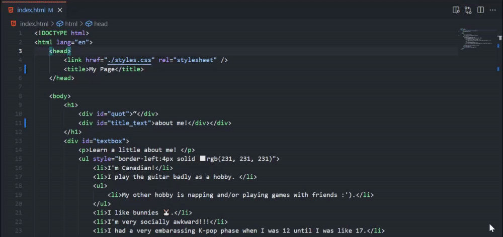
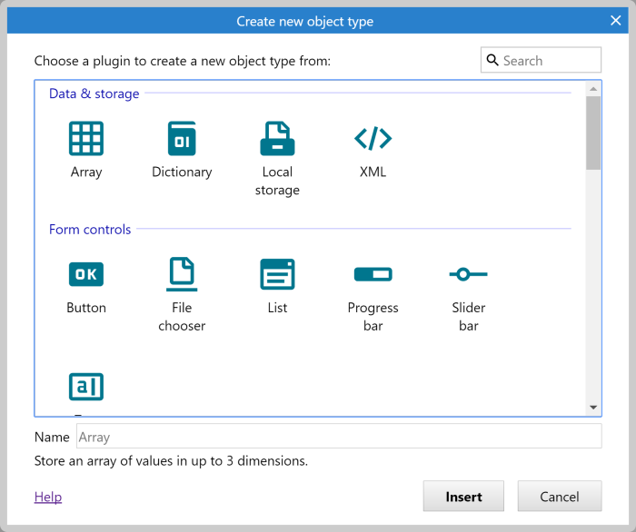
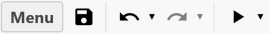
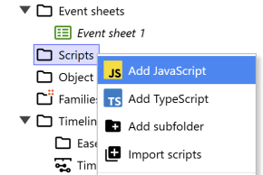

VS CODE → JAVASCRIPT → CONSTRUCT
Your code.
A new setting.
Write a button interaction in VS Code. Test it as a webpage. Then make the same idea work in Construct.
Part A (steps 1–4): make and test a webpage in VS Code. Part B (steps 5–7): rebuild its interaction in Construct, after the tool introduction. Steps 8–9 are optional. No AI or terminal is required.
BY THE END OF THIS GUIDE YOU CAN
- Make a webpage react when someone clicks
- Read four lines of JavaScript and explain every one
- Move the same idea into a Construct game
Start in VS Code ↓ Download starter files ↓
About the screenshots
Screenshots come from Microsoft and Construct’s official documentation. They show real interface controls, with captions explaining where the source example differs. Open the real tool beside this guide.
One step at a time. Keep the real tool open beside this guide.
STEP 01
Open your folder in VS Code.
Complete the VS Code + Live Preview setup first. On your Desktop, create a new folder called my-story-code. In VS Code, choose File → Open Folder… and select it.
Keep your earlier exercise in its own folder. In the Explorer on the left, use New File to create index.html and story.js.

Desktop/
└── my-story-code/
├── index.html
└── story.jsCheck before continuing: Both files appear inside the same folder in Explorer.
STEP 02
Connect the webpage to your JavaScript file.
Select index.html, paste this entire example into the empty file and save with Ctrl+S (Windows) or Cmd+S (Mac).
<!doctype html>
<html lang="en">
<head>
<meta charset="utf-8">
<meta name="viewport" content="width=device-width, initial-scale=1">
<title>A place I know</title>
<script src="story.js" defer></script>
</head>
<body>
<h1>A place I know</h1>
<p id="story" aria-live="polite">I hear rain at the bus stop.</p>
<button id="future" type="button">See a possible future</button>
</body>
</html>src="story.js" points to the file beside the HTML. defer waits until the HTML is parsed before running it. The two id values give JavaScript something to find.
WHAT DOES THIS CODE MEAN?
<script src="story.js" defer></script>Connects this page to your JavaScript file.defermeans: wait until the page has loaded. Scripts ↗<p id="story">idis a unique name tag. JavaScript uses it to find exactly this paragraph. The id attribute ↗<button id="future" type="button">A real button. It works with a mouse, a keyboard and touch. Its name tag isfuture.
TRY IT: CHANGE ONE THING
- Change the button’s words between
<button>and</button>. Save and look.
LEARN IT PROPERLY ON W3SCHOOLSHTML scripts ↗HTML id ↗
MDN: adding JavaScript to a webpage ↗
Check before continuing: The filename is index.html, and the script line is inside its head section.
STEP 03
Write the click action in story.js.
Select story.js. Paste the code below and save. JavaScript files contain JavaScript only: do not add <script> tags here.
const futureText = "In 2040, this stop plays memories left by strangers.";
const story = document.querySelector("#story");
const button = document.querySelector("#future");
button.addEventListener("click", () => {
story.textContent = futureText;
});The first line holds your future sentence. The next two lines find the paragraph and button. The click listener changes the paragraph when someone presses the button.
- 1Find itLook up the paragraph and the button by their id.
- 2ListenWait for a click on the button.
- 3Change itSwap the paragraph’s words.
WHAT DOES THIS CODE MEAN?
const futureText = "In 2040, …";A variable: a labelled box that holds your sentence.constmeans the box keeps the same contents. Variables ↗const story = document.querySelector("#story");Find it: look through the page for the element with idstoryand keep it in a box calledstory. The#means “id”. querySelector ↗const button = document.querySelector("#future");Same move: find the button and call itbutton.button.addEventListener("click", () => { … });Listen: when someone clicks the button, run the code between{and}. addEventListener ↗story.textContent = futureText;Change it: replace the paragraph’s words with the sentence in your box. textContent ↗
Each line ends with ;, like a full stop at the end of a sentence.
TRY IT: CHANGE ONE THING
- Your sentence: change the text between the quotes on line 1. Save, then click the button.
- Break it on purpose: change
"#story"to"#storry", save and click. Nothing happens: that is what one typo does. Change it back. - Stretch: make a second click change the words back. Stuck? Try it with the AI coding guide and log what you kept.
LEARN IT PROPERLY ON W3SCHOOLSJavaScript tutorial ↗Events ↗The HTML DOM ↗
Check before continuing: Both files are saved. The names story and future match the HTML ids exactly.
STEP 04
Try it in Live Preview.
- Return to the index.html tab.
- Use Microsoft Live Preview’s Show Preview button at the top right of the editor.
- Press See a possible future in your page.
- Change the future sentence in
story.js, save, reload the preview if needed, and press the button again.

Watch Microsoft open Live Preview

Close this section to hide the animation.
Try the actual example webpage ↗
Check before continuing: The rain sentence changes only after you press the button. This linked example is a webpage, not the Construct editor.
CHECKPOINT / WEBPAGE
Click your button in Live Preview and check that the words change. Save both files.
This celebrates your practice. Finish the Lab 2 checklist separately.
STEP 05
Build the same scene in Construct.
TOOL CHANGE / WEBPAGE → GAME ENGINE
Meet Construct 3 before you open it.
Construct 3 is a game-making application that runs in your browser. You place objects in a scene and give them rules using an event sheet. You can also add JavaScript.
The scene you arrange: text, buttons, characters and backgrounds.
The settings for the selected object: its text, size, position and other options.
The rules: when the button is clicked → change the text.
Why switch? You will rebuild the same interaction in another tool. The idea stays the same; how you find objects and run code changes. Construct objects are not HTML elements, so you will use Construct’s runtime instead of document.querySelector.
- Save your working webpage. Keep VS Code open.
- Open Construct in a separate browser tab.
- Create a project, place your Text and Button, then open its event sheet.
The school’s Pro code is in Alinta’s “Construct 3 Code and more!” announcement. Use the interface guide if a panel is missing.
Open the real Construct editor ↗
- Choose New project. Name it
My story interaction. - In Layout 1, double-click empty space. Search for Text, insert it and place it inside the visible viewport. Keep its object type name Text.
- In Properties, set its text to I hear rain at the bus stop. Make the box wide and tall enough for your sentence.
- Insert a Button the same way. Set its displayed text to See a possible future.

Need help finding Layout, Properties or Event sheet? See the labelled interface and basic Construct guide.
Check before continuing: Exactly one Text object named Text and one Button are in the first layout.
STEP 06
Move the idea into a JavaScript action.
In VS Code, create construct-action.js beside your other files. Paste these two lines and save. This file holds the snippet you will copy into Construct.
const futureText = "In 2040, this stop plays memories left by strangers.";
runtime.objects.Text.getFirstInstance().text = futureText;| Webpage | Construct |
|---|---|
| HTML paragraph with id="story" | Text object named Text |
| JavaScript click listener | Button → On clicked condition |
| story.textContent = futureText | runtime.objects.Text.getFirstInstance().text = futureText |
The future sentence stays yours. Construct supplies runtime; a plain webpage does not. HTML markup and document.querySelector are not how you address this Construct Text object.
- Open Event sheet 1. Select Add event → Button → On clicked.
- On that row, open Add… to the right of Add action. Choose Add JavaScript.
- Paste only the two lines from
construct-action.jsinto the code editor.

Code reference: Text’s text property. Here getFirstInstance() selects the first Text instance; this exercise deliberately uses only one.
Check before continuing: The JavaScript sits on the Button / On clicked row. If adapting your earlier project, remove its old Set text action so only this action changes the text.
STEP 07
Preview, personalise and save.

- Select Preview, then click your button. The future sentence should appear.
- Return to the JavaScript action and replace the sentence with your own observation imagined in a future setting. Preview again.
- Choose Menu → Project → Save as → Download a copy. Keep the
.c3pin your Desktop project folder and reopen it to check it.
Choose an ordinary place, sound or habit you know. You decide what to share. No generative AI is needed. Continue to follow your assignment’s requirements.
Check before continuing: Your saved Construct project changes text when clicked. Editing construct-action.js in VS Code does not update the pasted action automatically: copy your changes across again.
You can stop here. You have used JavaScript in both a webpage and Construct. The next steps show how to work with complete script files.
CHECKPOINT / CONSTRUCT
Run Preview, test the button, save your Construct project and check that you can reopen it.
This celebrates your practice. Finish the Lab 2 checklist separately.
STEP 08
Optional: import a complete .js file.
In VS Code, create main.js in your exercise folder. Save this code:
runOnStartup(runtime => {
runtime.addEventListener("beforeprojectstart", () => {
runtime.objects.Text.getFirstInstance().text =
"I hear rain at the bus stop. What could this place become?";
});
});- In Construct’s Project Bar, right-click the Scripts folder.
- Choose Import scripts and select your saved
main.js. - Select the imported file. In Properties → Purpose, select Main script. Its name appears bold.
- Preview from the first layout. The longer starting sentence should appear before you click. Your existing button action still reveals the future.

The startup callback waits for beforeprojectstart, when objects exist. Only one file can be the main script. Use this in the fresh exercise project; preserve an existing main script in other projects.
Check before continuing: The imported file is under Scripts, has Purpose Main script, and changes the starting text. Importing makes a project copy; later VS Code edits are not automatically linked.
STEP 09
Optional: keep editing the script in VS Code.
For repeated editing, Construct documents a folder workflow. Open the official external-editor walkthrough ↗.
- Save your Construct project as a folder project, using the project-folder option under Save as. Choose a new empty folder such as
Desktop/my-construct-project. A downloaded.c3pis not a folder project. - Right-click Scripts in Construct’s Project Bar. Enable Auto reload all on preview.
- In VS Code, use File → Open Folder… to open that project’s
scriptssubfolder. Open itsmain.js, not the earlier source copy. - Edit the starting sentence, save, return to Construct and select Preview.
Keep editing this file in VS Code: auto-reload can overwrite unsaved edits made inside Construct. It updates script files, not snippets pasted into events. If folder saving is unavailable in your browser, use the copy/paste workflow above.
Check before continuing: A saved change in the project’s scripts/main.js appears when you preview in Construct. No manual recopying is needed for that file.
WHEN SOMETHING DOES NOT WORK
Find the missing connection.
The webpage button does nothing.
Save both files. Check that index.html and story.js share a folder, that the script filename matches, and that the ids are story and future. Reload Live Preview and click again. Compare with the downloadable starter.
“runtime is not defined” appears.
You are running Construct code outside Construct. Live Preview runs index.html with story.js. Run construct-action.js as a Construct event action, and main.js as the Construct main script.
Construct cannot find Text, or the text is blank.
Check the object type name is exactly Text, including the capital T, with one instance in the first layout. Its box must be inside the visible viewport, large enough, and have a readable text colour.
The text changes before I click.
The two-line action may be in a standalone script block, which can run every tick. Place it as an action on Button / On clicked. The optional main.js intentionally changes only the starting text.
I changed a VS Code file, but Construct has not changed.
A pasted snippet or imported file is a copy. Paste updated snippets again. For ongoing script-file edits, follow step 9 and edit the file inside the saved Construct project’s scripts folder.
Construct reports a scripting limit.
The Free edition has scripting limits. Keep this exercise small, or use the course’s existing access if supplied. You can also complete the event-sheet-only interaction. See the current official edition comparison.
From your experience to an interaction.
Ask someone to try your button before explaining it. What did the change make them imagine? Write down one choice you made and one thing you want to revise.
Publish the webpage with GitHub →
The webpage files can follow the GitHub guide. A Construct project needs Construct’s web export before web hosting; uploading a .c3p does not make a playable website.